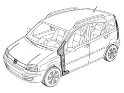
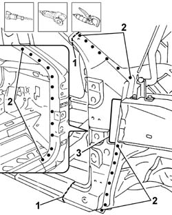
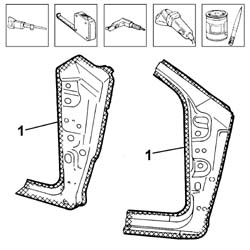
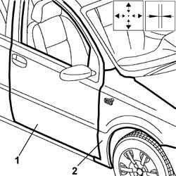
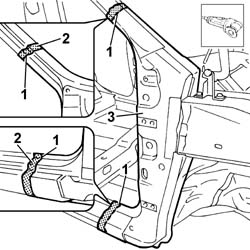
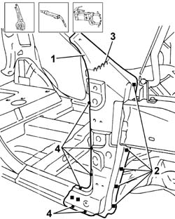
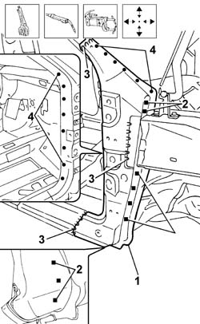

7210A60 R.R. FRONT PILLAR
- Path
- Procedures > 72 PANELS AND FRAME > 7210 REMOVING REFITTING > 7210A STRUCTURAL ELEMENTS (FRONT PART) > 7210A60 R.R. FRONT PILLAR
- Kind
- repair procedure (removal / refitting; the operation number is the code)
- Applies to
- all engines; all production periods
- Interactive page
- https://sloeber94.github.io/elrnDB-fPnd/en/#/2753340
Applies to: all engines; all production periods
 Removing
Removing
 Refitting
RefittingCheck if any of the connected parts are deformed by checking body alignment dimensions. Use appropriate measurement tools (reference rigs, templates or gauges).
Straighten the body if necessary.

Applies to: all engines; all production periods
Use a rotary brush to clean the panel edges to reveal the weld spots.
1. Use a pneumatic saw to follow the dotted cutting lines shown in the figure.
2. Use a drill and chamfering machine to remove the weld spots shown in the figure.
3. Use a grinding wheel to remove the welding residues.
Use a scalpel and mallet to remove spots ground previously and remove the pillar from the car.

Applies to: all engines; all production periods
Straighten the body edges using a mallet and profiled stake.
Use a grinding wheel to remove the spot weld residues.
Apply electric weld paint to the edges of the bodyshell.
Cut the front pillar at the bench. Take care to leave a sufficiently wide steel edge to attach the new part to.
1. Use a rotary brush to remove the corrosion-proofing from around the entire edge.
Apply electroweldable paint finish to the edges in contact with the car.

Applies to: all engines; all production periods
Refitting
RemovingPosition the front pillar reinforcement on the car and secure using self-locking clips.
Position the front pillar on the car and secure using self-locking clips.
Use the hinge retaining nut as a reference point when locating the pillar.
Tack the replacement parts to the vehicle through a few spot welds.
Remove the self-locking grippers.
Remove the component locating screws.
1. Refit the front door with its hinges.
2. Refit the front wing.
Use a gauge to check the windscreen seat diagonals and the alignment of the components.

Applies to: all engines; all production periods
Remove the front door, door hinges and wing.
1. Use a circular saw to cut both panel sections in order to achieve a perfect joint line.
2. Trim off any excess from the panel.
3. Remove the parts.

Applies to: all engines; all production periods
1. Use the holes made previously to position the pillar reinforcement to the car and secure.
2. use a MIG welder to fill the holes made previously in the door sill reinforcement.
3. Use a MIG welder to carry out the seam welding in the upper part of the reinforcement.
4. Use a spot welder to make a few spot welds around the edge of the part.

Applies to: all engines; all production periods
1. Position the front pillar and secure to the car.
2. Use a MIG welder to weld the holes made previously.
3. Use a MIG welder to carry out the seam welding in the areas illustrated.
4. Use a spot welder to weld the points indicated.

Applies to: all engines; all production periods
Correct any deformations in the panel using a profiled stake and mallet.
Use a grinding wheel to level the weld and remove.
Apply rust-proofing to newly-welded areas.
Seal the joint lines between the part and the car.